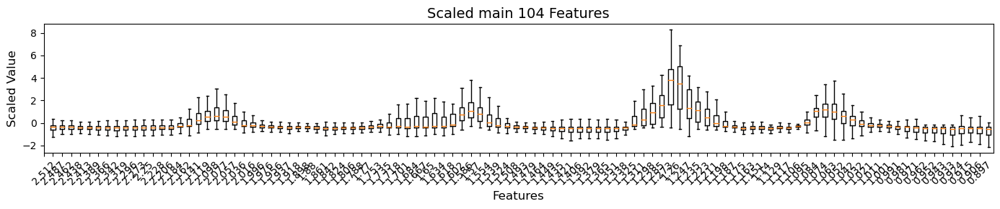
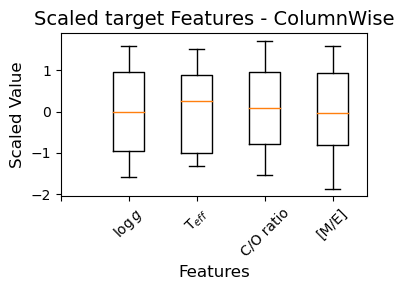
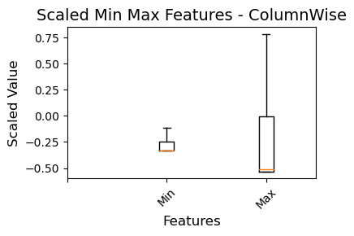
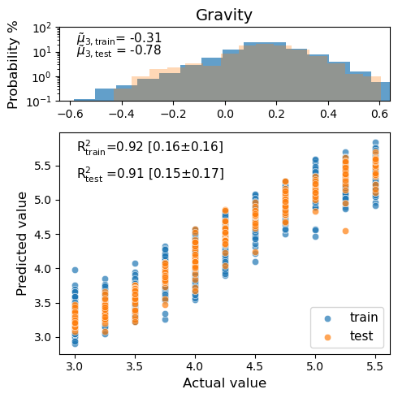
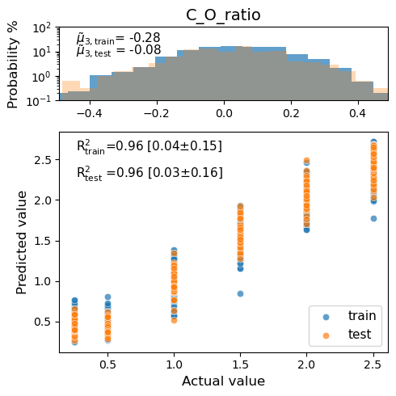
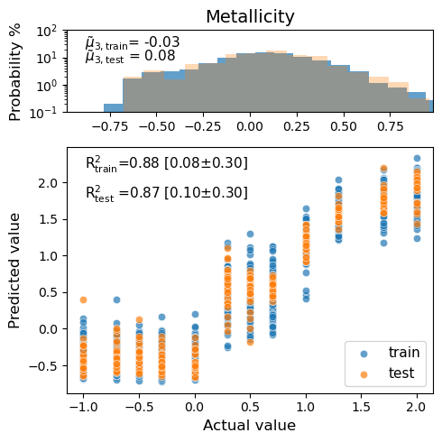
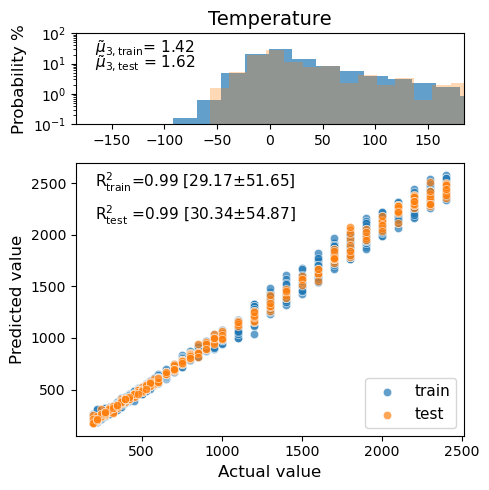

Train a Regression ConvNN Model Using BOHB Tuned Hyperparameters¶
[3]:
from TelescopeML.DeepTrainer import *
from TelescopeML.DeepBuilder import *
from TelescopeML.Predictor import *
from TelescopeML.IO_utils import load_or_dump_trained_model_CNN
from TelescopeML.StatVisAnalyzer import regression_report
Step 1: Load the training dataset (syntheric spectra)¶
[4]:
# original trainign dataset astronomers use to predict the parameters of the telescope brown dwarf spectra
train_BD = pd.read_csv('../datasets/browndwarf_R100_v4_newWL_v2.csv.bz2', compression='bz2')
train_BD.head(3)
[4]:
| gravity | temperature | c_o_ratio | metallicity | 2.512 | 2.487 | 2.462 | 2.438 | 2.413 | 2.389 | ... | 0.971 | 0.962 | 0.952 | 0.943 | 0.933 | 0.924 | 0.915 | 0.906 | 0.897 | is_augmented | |
|---|---|---|---|---|---|---|---|---|---|---|---|---|---|---|---|---|---|---|---|---|---|
| 0 | 5.0 | 1100 | 0.25 | -1.0 | 9.103045e-08 | 1.181658e-07 | 1.307868e-07 | 1.269229e-07 | 1.159179e-07 | 8.925110e-08 | ... | 9.640859e-08 | 7.612550e-08 | 6.901364e-08 | 6.247359e-08 | 4.112384e-08 | 5.127995e-08 | 4.897355e-08 | 4.087795e-08 | 2.791689e-08 | no |
| 1 | 5.0 | 1100 | 0.25 | -0.7 | 9.103045e-08 | 1.181658e-07 | 1.307868e-07 | 1.269229e-07 | 1.159179e-07 | 8.925110e-08 | ... | 9.640859e-08 | 7.612550e-08 | 6.901364e-08 | 6.247359e-08 | 4.112384e-08 | 5.127995e-08 | 4.897355e-08 | 4.087795e-08 | 2.791689e-08 | no |
| 2 | 5.0 | 1100 | 0.25 | -0.5 | 9.103045e-08 | 1.181658e-07 | 1.307868e-07 | 1.269229e-07 | 1.159179e-07 | 8.925110e-08 | ... | 9.640859e-08 | 7.612550e-08 | 6.901364e-08 | 6.247359e-08 | 4.112384e-08 | 5.127995e-08 | 4.897355e-08 | 4.087795e-08 | 2.791689e-08 | no |
3 rows × 109 columns
Check the columns¶
note: one of the columns, is_augmented, is indicating wheter this is a native dataset or an augmented one. For now, we don’t need it so drop it, but all modules will take this into account!
[5]:
target_features = ['gravity', 'temperature', 'c_o_ratio', 'metallicity']
train_BD[target_features].head()
[5]:
| gravity | temperature | c_o_ratio | metallicity | |
|---|---|---|---|---|
| 0 | 5.0 | 1100 | 0.25 | -1.0 |
| 1 | 5.0 | 1100 | 0.25 | -0.7 |
| 2 | 5.0 | 1100 | 0.25 | -0.5 |
| 3 | 5.0 | 1100 | 0.25 | -0.3 |
| 4 | 5.0 | 1100 | 0.25 | 0.0 |
[6]:
training_features_labels = [item for item in train_BD.columns.to_list() if item not in target_features+['is_augmented']]
training_features_labels[:5]
[6]:
['2.512', '2.487', '2.462', '2.438', '2.413']
[7]:
training_features_wl = [float(item) for item in train_BD.columns.to_list() if item not in target_features+['is_augmented']]
training_features_wl[:5]
[7]:
[2.512, 2.487, 2.462, 2.438, 2.413]
[8]:
wl = pd.read_csv('../datasets/wl.csv')
wl.head(3)
[8]:
| wl | |
|---|---|
| 0 | 2.511960 |
| 1 | 2.486966 |
| 2 | 2.462220 |
Prepare feature variables (X) and targets (y)¶
[9]:
# to assure we are only training the module with the native non-augmented BD training dataset
train_BD = train_BD[train_BD['is_augmented'].isin(['no'])]
# Training feature variables
X = train_BD.drop(
columns=['gravity',
'temperature',
'c_o_ratio',
'metallicity',
'is_augmented'])#.astype(np.float32)
# Target feature variables
y = train_BD[['gravity', 'c_o_ratio', 'metallicity', 'temperature', ]]#.astype(np.float32)
[10]:
y.loc[:, 'temperature'] = np.log10(y['temperature'])
[11]:
y.head(5)
[11]:
| gravity | c_o_ratio | metallicity | temperature | |
|---|---|---|---|---|
| 0 | 5.0 | 0.25 | -1.0 | 3.041393 |
| 1 | 5.0 | 0.25 | -0.7 | 3.041393 |
| 2 | 5.0 | 0.25 | -0.5 | 3.041393 |
| 3 | 5.0 | 0.25 | -0.3 | 3.041393 |
| 4 | 5.0 | 0.25 | 0.0 | 3.041393 |
Step 2: Build the CNN model / Data processing¶
[13]:
# Instintiate BuildCNN class
build_cnn_regression = BuildRegressorCNN(
feature_values=X.to_numpy(),
feature_names=X.columns,
target_values=y.to_numpy(),
target_name=['gravity', 'c_o_ratio', 'metallicity', 'temperature'],
is_tuned='yes',
param_grid=None,
spectral_resolution=100,
is_feature_improved='no',
is_augmented='no',
ml_model=None,
ml_model_str='CNN',
)
[14]:
build_cnn_regression.split_train_validation_test(test_size=0.1,
val_size=0.1,
random_state_=100,)
[15]:
# Scale the X features using MinMax Scaler
build_cnn_regression.standardize_X_row_wise()
[16]:
build_cnn_regression.plot_boxplot_scaled_features(scaled_feature= build_cnn_regression.X_train_standardized_rowwise,
xticks_list = training_features_labels,
title = 'Scaled main 104 Features',
fig_size=(14, 3),
)

Scale y features - ColumnWise¶
[17]:
# Standardize the y features using Standard Scaler
build_cnn_regression.standardize_y_column_wise()
[18]:
build_cnn_regression.plot_boxplot_scaled_features(scaled_feature= build_cnn_regression.y_train_standardized_columnwise,
xticks_list = ['','$\log g$', 'T$_{eff}$', 'C/O ratio', '[M/E]'],
title = 'Scaled target Features - ColumnWise',
fig_size=(4, 3),
)

[19]:
# build_cnn_regression.y_train_standardized_columnwise
Feature engeenering: Take Min and Max of each row (BD spectra)¶
[20]:
# train
build_cnn_regression.X_train_min = build_cnn_regression.X_train.min(axis=1)
build_cnn_regression.X_train_max = build_cnn_regression.X_train.max(axis=1)
# validation
build_cnn_regression.X_val_min = build_cnn_regression.X_val.min(axis=1)
build_cnn_regression.X_val_max = build_cnn_regression.X_val.max(axis=1)
# test
build_cnn_regression.X_test_min = build_cnn_regression.X_test.min(axis=1)
build_cnn_regression.X_test_max = build_cnn_regression.X_test.max(axis=1)
[21]:
df_MinMax_train = pd.DataFrame((build_cnn_regression.X_train_min, build_cnn_regression.X_train_max)).T
df_MinMax_val = pd.DataFrame((build_cnn_regression.X_val_min, build_cnn_regression.X_val_max)).T
df_MinMax_test = pd.DataFrame((build_cnn_regression.X_test_min, build_cnn_regression.X_test_max)).T
[22]:
df_MinMax_train.rename(columns={0:'min', 1:'max'}, inplace=True)
[23]:
df_MinMax_train.head()
[23]:
| min | max | |
|---|---|---|
| 0 | 2.984493e-18 | 4.560593e-11 |
| 1 | 6.833671e-15 | 2.317328e-09 |
| 2 | 2.870361e-14 | 5.564836e-09 |
| 3 | 5.696652e-19 | 5.071436e-11 |
| 4 | 1.321553e-10 | 1.636513e-07 |
Scale Min Max features - ColumnWise¶
[24]:
build_cnn_regression.standardize_X_column_wise(
X_train = df_MinMax_train.values,
X_val = df_MinMax_val.values,
X_test = df_MinMax_test.values,
)
[25]:
build_cnn_regression.plot_boxplot_scaled_features(scaled_feature= build_cnn_regression.X_test_standardized_columnwise,
xticks_list = ['','Min','Max'],
title = 'Scaled Min Max Features - ColumnWise',
fig_size=(4, 3),
)

Step 3: Train CNN model¶
[29]:
train_cnn_model = TrainRegressorCNN(
# input dataset: StandardScaled instances
X1_train = build_cnn_regression.X_train_standardized_rowwise,
X1_val = build_cnn_regression.X_val_standardized_rowwise,
X1_test = build_cnn_regression.X_test_standardized_rowwise,
# input dataset: Min Max of each instance
X2_train = build_cnn_regression.X_train_standardized_columnwise,
X2_val = build_cnn_regression.X_val_standardized_columnwise,
X2_test = build_cnn_regression.X_test_standardized_columnwise,
# 1st target
y1_train = build_cnn_regression.y_train_standardized_columnwise[:,0],
y1_val = build_cnn_regression.y_val_standardized_columnwise[:,0],
y1_test = build_cnn_regression.y_test_standardized_columnwise[:,0],
# 2nd target
y2_train = build_cnn_regression.y_train_standardized_columnwise[:,1],
y2_val = build_cnn_regression.y_val_standardized_columnwise[:,1],
y2_test = build_cnn_regression.y_test_standardized_columnwise[:,1],
# 3rd target
y3_train = build_cnn_regression.y_train_standardized_columnwise[:,2],
y3_val = build_cnn_regression.y_val_standardized_columnwise[:,2],
y3_test = build_cnn_regression.y_test_standardized_columnwise[:,2],
# 4th target
y4_train = build_cnn_regression.y_train_standardized_columnwise[:,3],
y4_val = build_cnn_regression.y_val_standardized_columnwise[:,3],
y4_test = build_cnn_regression.y_test_standardized_columnwise[:,3],
)
[30]:
hyperparameters = {
'Conv__MaxPooling1D': 2,
'Conv__num_blocks': 1,
'Conv__num_layers_per_block': 3,
'Conv__num_filters': 4,
'Conv__kernel_size': 6,
'FC__NumberLayers': 4,
'FC1__num_blocks' : 1,
'FC1_num_layers_per_block': 4,
'FC1__dropout': 0.09889223768186726,
'FC1__units': 128,
'FC2__num_blocks' : 1,
'FC2_num_layers_per_block':2,
'FC2__dropout': 0.0024609140719442646,
'FC2__units': 64,
'learning_rate': 4.9946842008422193e-05}
[31]:
train_cnn_model.build_model(hyperparameters = hyperparameters,
)
2023-08-11 12:11:35.422940: I tensorflow/core/platform/cpu_feature_guard.cc:142] This TensorFlow binary is optimized with oneAPI Deep Neural Network Library (oneDNN) to use the following CPU instructions in performance-critical operations: AVX2 FMA
To enable them in other operations, rebuild TensorFlow with the appropriate compiler flags.
Model: "model"
__________________________________________________________________________________________________
Layer (type) Output Shape Param # Connected to
==================================================================================================
input_1 (InputLayer) [(None, 104, 1)] 0
__________________________________________________________________________________________________
Conv__B1_L1 (Conv1D) (None, 104, 16) 112 input_1[0][0]
__________________________________________________________________________________________________
Conv__B1_L2 (Conv1D) (None, 104, 64) 6208 Conv__B1_L1[0][0]
__________________________________________________________________________________________________
Conv__B1_L3 (Conv1D) (None, 104, 144) 55440 Conv__B1_L2[0][0]
__________________________________________________________________________________________________
MaxPool1D__B1_L3 (MaxPooling1D) (None, 52, 144) 0 Conv__B1_L3[0][0]
__________________________________________________________________________________________________
flatten (Flatten) (None, 7488) 0 MaxPool1D__B1_L3[0][0]
__________________________________________________________________________________________________
FC1__B1_L1 (Dense) (None, 512) 3834368 flatten[0][0]
__________________________________________________________________________________________________
FC1__B1_L2 (Dense) (None, 2048) 1050624 FC1__B1_L1[0][0]
__________________________________________________________________________________________________
FC1__B1_L3 (Dense) (None, 4608) 9441792 FC1__B1_L2[0][0]
__________________________________________________________________________________________________
FC1__B1_L4 (Dense) (None, 8192) 37756928 FC1__B1_L3[0][0]
__________________________________________________________________________________________________
FC1__Dropout__B1_L4 (Dropout) (None, 8192) 0 FC1__B1_L4[0][0]
__________________________________________________________________________________________________
input_2 (InputLayer) [(None, 2)] 0
__________________________________________________________________________________________________
Concatenated_Layer (Concatenate (None, 8194) 0 FC1__Dropout__B1_L4[0][0]
input_2[0][0]
__________________________________________________________________________________________________
FC2__B1_L1 (Dense) (None, 256) 2097920 Concatenated_Layer[0][0]
__________________________________________________________________________________________________
FC2__B1_L2 (Dense) (None, 1024) 263168 FC2__B1_L1[0][0]
__________________________________________________________________________________________________
FC2__Dropout__B1_L2 (Dropout) (None, 1024) 0 FC2__B1_L2[0][0]
__________________________________________________________________________________________________
gravity (Dense) (None, 1) 1025 FC2__Dropout__B1_L2[0][0]
__________________________________________________________________________________________________
c_o_ratio (Dense) (None, 1) 1025 FC2__Dropout__B1_L2[0][0]
__________________________________________________________________________________________________
metallicity (Dense) (None, 1) 1025 FC2__Dropout__B1_L2[0][0]
__________________________________________________________________________________________________
temperature (Dense) (None, 1) 1025 FC2__Dropout__B1_L2[0][0]
==================================================================================================
Total params: 54,510,660
Trainable params: 54,510,660
Non-trainable params: 0
__________________________________________________________________________________________________
None
[32]:
history, model = train_cnn_model.fit_cnn_model(budget=1)
2023-08-11 12:11:39.897577: I tensorflow/compiler/mlir/mlir_graph_optimization_pass.cc:185] None of the MLIR Optimization Passes are enabled (registered 2)
57/782 [=>............................] - ETA: 2:28 - loss: 0.8493 - gravity_loss: 0.3313 - c_o_ratio_loss: 0.2397 - metallicity_loss: 0.2298 - temperature_loss: 0.0484 - gravity_mae: 0.6989 - c_o_ratio_mae: 0.5663 - metallicity_mae: 0.5553 - temperature_mae: 0.2095
---------------------------------------------------------------------------
KeyboardInterrupt Traceback (most recent call last)
Cell In [32], line 1
----> 1 history, model = train_cnn_model.fit_cnn_model(budget=1)
File ~/RESEARCH/ml/projects/telescopeML_project/telescopeML/TelescopeML/DeepTrainer.py:261, in TrainRegressorCNN.fit_cnn_model(self, budget)
257 early_stop = EarlyStopping(monitor='loss', min_delta=4e-4, patience=50, mode='auto', \
258 restore_best_weights=True)
260 # YOU CAN ADD FUNCTION HERE TO ADD NOISE
--> 261 history = self.model.fit(x=[self.X1_train, self.X2_train],
262 y=[self.y1_train, self.y2_train, self.y3_train, self.y4_train],
263 # self.x_train, self.y_train,
264 batch_size=32, # config['batch_size'], # self.batch_size,
265 validation_data=(
266 [self.X1_val, self.X2_val], [self.y1_val, self.y2_val, self.y3_val, self.y4_val]),
267 # validation_split=0.2,
268 epochs=int(budget),
269 verbose=1,
270 callbacks=[early_stop],
271 )
272 self.model = model
273 self.history = history
File /usr/local/anaconda3/envs/ml/lib/python3.9/site-packages/keras/engine/training.py:1184, in Model.fit(self, x, y, batch_size, epochs, verbose, callbacks, validation_split, validation_data, shuffle, class_weight, sample_weight, initial_epoch, steps_per_epoch, validation_steps, validation_batch_size, validation_freq, max_queue_size, workers, use_multiprocessing)
1177 with tf.profiler.experimental.Trace(
1178 'train',
1179 epoch_num=epoch,
1180 step_num=step,
1181 batch_size=batch_size,
1182 _r=1):
1183 callbacks.on_train_batch_begin(step)
-> 1184 tmp_logs = self.train_function(iterator)
1185 if data_handler.should_sync:
1186 context.async_wait()
File /usr/local/anaconda3/envs/ml/lib/python3.9/site-packages/tensorflow/python/eager/def_function.py:885, in Function.__call__(self, *args, **kwds)
882 compiler = "xla" if self._jit_compile else "nonXla"
884 with OptionalXlaContext(self._jit_compile):
--> 885 result = self._call(*args, **kwds)
887 new_tracing_count = self.experimental_get_tracing_count()
888 without_tracing = (tracing_count == new_tracing_count)
File /usr/local/anaconda3/envs/ml/lib/python3.9/site-packages/tensorflow/python/eager/def_function.py:917, in Function._call(self, *args, **kwds)
914 self._lock.release()
915 # In this case we have created variables on the first call, so we run the
916 # defunned version which is guaranteed to never create variables.
--> 917 return self._stateless_fn(*args, **kwds) # pylint: disable=not-callable
918 elif self._stateful_fn is not None:
919 # Release the lock early so that multiple threads can perform the call
920 # in parallel.
921 self._lock.release()
File /usr/local/anaconda3/envs/ml/lib/python3.9/site-packages/tensorflow/python/eager/function.py:3039, in Function.__call__(self, *args, **kwargs)
3036 with self._lock:
3037 (graph_function,
3038 filtered_flat_args) = self._maybe_define_function(args, kwargs)
-> 3039 return graph_function._call_flat(
3040 filtered_flat_args, captured_inputs=graph_function.captured_inputs)
File /usr/local/anaconda3/envs/ml/lib/python3.9/site-packages/tensorflow/python/eager/function.py:1963, in ConcreteFunction._call_flat(self, args, captured_inputs, cancellation_manager)
1959 possible_gradient_type = gradients_util.PossibleTapeGradientTypes(args)
1960 if (possible_gradient_type == gradients_util.POSSIBLE_GRADIENT_TYPES_NONE
1961 and executing_eagerly):
1962 # No tape is watching; skip to running the function.
-> 1963 return self._build_call_outputs(self._inference_function.call(
1964 ctx, args, cancellation_manager=cancellation_manager))
1965 forward_backward = self._select_forward_and_backward_functions(
1966 args,
1967 possible_gradient_type,
1968 executing_eagerly)
1969 forward_function, args_with_tangents = forward_backward.forward()
File /usr/local/anaconda3/envs/ml/lib/python3.9/site-packages/tensorflow/python/eager/function.py:591, in _EagerDefinedFunction.call(self, ctx, args, cancellation_manager)
589 with _InterpolateFunctionError(self):
590 if cancellation_manager is None:
--> 591 outputs = execute.execute(
592 str(self.signature.name),
593 num_outputs=self._num_outputs,
594 inputs=args,
595 attrs=attrs,
596 ctx=ctx)
597 else:
598 outputs = execute.execute_with_cancellation(
599 str(self.signature.name),
600 num_outputs=self._num_outputs,
(...)
603 ctx=ctx,
604 cancellation_manager=cancellation_manager)
File /usr/local/anaconda3/envs/ml/lib/python3.9/site-packages/tensorflow/python/eager/execute.py:59, in quick_execute(op_name, num_outputs, inputs, attrs, ctx, name)
57 try:
58 ctx.ensure_initialized()
---> 59 tensors = pywrap_tfe.TFE_Py_Execute(ctx._handle, device_name, op_name,
60 inputs, attrs, num_outputs)
61 except core._NotOkStatusException as e:
62 if name is not None:
KeyboardInterrupt:
[27]:
build_cnn_regression.trained_model = model
build_cnn_regression.history = history
[28]:
tf.keras.utils.plot_model(
train_cnn_model.model,
to_file="model.png",
show_shapes=True,
show_dtype=False,
show_layer_names=True,
rankdir="TB",
expand_nested=True,
dpi=90,
layer_range=None,
# show_layer_activations=False,
)
('You must install pydot (`pip install pydot`) and install graphviz (see instructions at https://graphviz.gitlab.io/download/) ', 'for plot_model/model_to_dot to work.')
[29]:
load_or_dump_trained_model_CNN( trained_model = build_cnn_regression,
indicator='Toy_parameters__newbuild_random100_v2_delete',
load_or_dump = 'dump')
[30]:
loaded_model, history = load_or_dump_trained_model_CNN(indicator='Toy_parameters__newbuild_random100_v2_delete',
load_or_dump = 'load')
[31]:
build_cnn_regression.trained_model = loaded_model
build_cnn_regression.trained_model_history = history
Step 4: Check Trained Model¶
[32]:
tf.keras.utils.plot_model(
build_cnn_regression.trained_model,
# to_file="model.png",
show_shapes=True,
show_dtype=False,
show_layer_names=True,
rankdir="TB",
expand_nested=True,
dpi=90,
layer_range=None,
# show_layer_activations=False,
)
('You must install pydot (`pip install pydot`) and install graphviz (see instructions at https://graphviz.gitlab.io/download/) ', 'for plot_model/model_to_dot to work.')
[33]:
build_cnn_regression.trained_model.summary()
Model: "model"
__________________________________________________________________________________________________
Layer (type) Output Shape Param # Connected to
==================================================================================================
input_1 (InputLayer) [(None, 104, 1)] 0
__________________________________________________________________________________________________
Conv__B1_L1 (Conv1D) (None, 104, 16) 112 input_1[0][0]
__________________________________________________________________________________________________
Conv__B1_L2 (Conv1D) (None, 104, 64) 6208 Conv__B1_L1[0][0]
__________________________________________________________________________________________________
Conv__B1_L3 (Conv1D) (None, 104, 144) 55440 Conv__B1_L2[0][0]
__________________________________________________________________________________________________
MaxPool1D__B1_L3 (MaxPooling1D) (None, 52, 144) 0 Conv__B1_L3[0][0]
__________________________________________________________________________________________________
flatten (Flatten) (None, 7488) 0 MaxPool1D__B1_L3[0][0]
__________________________________________________________________________________________________
FC1__B1_L1 (Dense) (None, 512) 3834368 flatten[0][0]
__________________________________________________________________________________________________
FC1__B1_L2 (Dense) (None, 2048) 1050624 FC1__B1_L1[0][0]
__________________________________________________________________________________________________
FC1__B1_L3 (Dense) (None, 4608) 9441792 FC1__B1_L2[0][0]
__________________________________________________________________________________________________
FC1__B1_L4 (Dense) (None, 8192) 37756928 FC1__B1_L3[0][0]
__________________________________________________________________________________________________
FC1__Dropout__B1_L4 (Dropout) (None, 8192) 0 FC1__B1_L4[0][0]
__________________________________________________________________________________________________
input_2 (InputLayer) [(None, 2)] 0
__________________________________________________________________________________________________
Concatenated_Layer (Concatenate (None, 8194) 0 FC1__Dropout__B1_L4[0][0]
input_2[0][0]
__________________________________________________________________________________________________
FC2__B1_L1 (Dense) (None, 256) 2097920 Concatenated_Layer[0][0]
__________________________________________________________________________________________________
FC2__B1_L2 (Dense) (None, 1024) 263168 FC2__B1_L1[0][0]
__________________________________________________________________________________________________
FC2__Dropout__B1_L2 (Dropout) (None, 1024) 0 FC2__B1_L2[0][0]
__________________________________________________________________________________________________
gravity (Dense) (None, 1) 1025 FC2__Dropout__B1_L2[0][0]
__________________________________________________________________________________________________
c_o_ratio (Dense) (None, 1) 1025 FC2__Dropout__B1_L2[0][0]
__________________________________________________________________________________________________
metallicity (Dense) (None, 1) 1025 FC2__Dropout__B1_L2[0][0]
__________________________________________________________________________________________________
temperature (Dense) (None, 1) 1025 FC2__Dropout__B1_L2[0][0]
==================================================================================================
Total params: 54,510,660
Trainable params: 54,510,660
Non-trainable params: 0
__________________________________________________________________________________________________
[34]:
build_cnn_regression.plot_model_loss(title = 'RandState=100: X:StandRow, y:StandCol - MinMax:StandCol, ToyCNNmodel')
Plot Y predicted vs Y_Actual: Histogram & Scatter plot¶
[35]:
i = 10
regression_report(
trained_model = build_cnn_regression,
Xtrain = [build_cnn_regression.X_train_standardized_rowwise[::i],
build_cnn_regression.X_train_standardized_columnwise[::i]],
Xtest = [build_cnn_regression.X_test_standardized_rowwise[::i],
build_cnn_regression.X_test_standardized_columnwise[::i]],
ytrain = build_cnn_regression.y_train_standardized_columnwise[::i],
ytest = build_cnn_regression.y_test_standardized_columnwise[::i],
target_i = 4,
xy_top = [0.05, 0.7],
xy_bottom= [0.05, 0.85],
print_results = False,
)




[ ]: